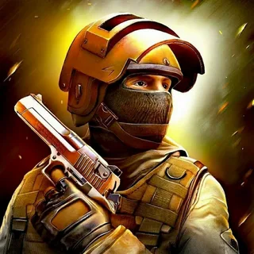
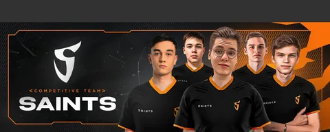
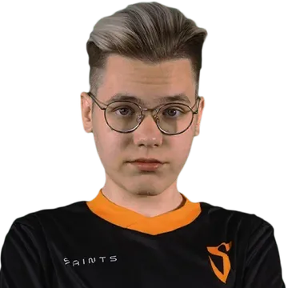
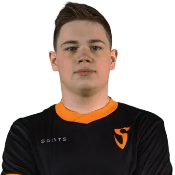

|  | Standoff 2 |
|  | Общая характеристика |
|

Также известен как: |

Также известен как: |
Кто и когда создал Кто и когда создал «Standoff 2»? Проект появился осенью 2018 года. При этом его автором считается студия AXLEBOLT. Она создала и выпустила продолжение известной игрв. Сегодня ее без труда удается найти и скачать бесплатно Мои пожелания Если вы не уверены что сможете спокойно играть в эту игру и не бомбить то скачивайте, ну а если вас будет бомбить чуть ли не каждые 10 минут то лучше не скачивайте, а то разломаете телефон на раз два. |